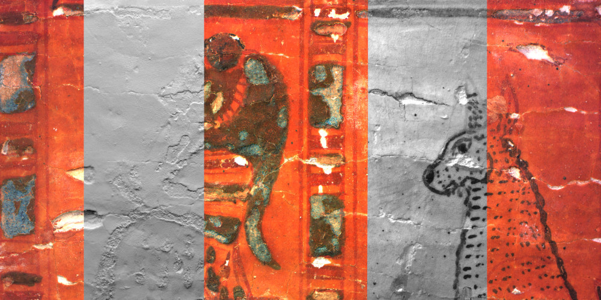

Examples¶
Plan of Sankt Gallen¶

This is the caption of POSG
Background¶
What can be seen in this multi light single camera scan?¶

Bible of Anjou¶
Background¶

Anjou Bible, fol. 3v, ‘REX EXPERTUS IN OMNI SCIENCIA’. King Robert enthroned, robed in a Byzantine-style imperial costume,with four virues crushing four vices on either side of him.

Anjou Bible, fol. 3v, ‘REX EXPERTUS IN OMNI SCIENCIA’. King Robert enthroned, robed in a Byzantine-style imperial costume,with four virues crushing four vices on either side of him.
What can be seen in this multi light single camera scan?¶
?? King Robert ??
Rijmbijbel¶
Background¶

Rijmbijbel
What can be seen in this multi light single camera scan?¶
?? Rijmbijbel ??
Open in web viewer¶
Egyptian coffin¶
Background¶

Egyptian coffin
What can be seen in this multi light single camera scan?¶
?? Egyptian coffin ??